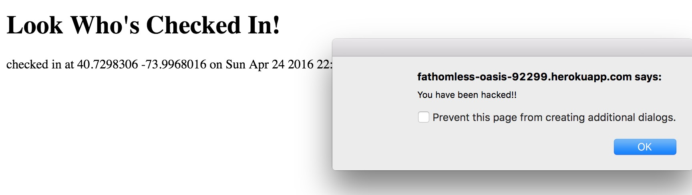

This assessment, tests the security of the Landmarks web application developed by Vincent Tsang for Comp20 Assignment 2 - front end - and assignment 3 - back end -. The front end part side of Landmarks is a client side interface. It uses a Google Maps API to render a map, and performs an HTTP POST to the server requesting data using HTMLhttpRequest. The POST sends a login along with the current latitude, and longitude of the user. The server then processes the information and returns a JSON file containing information regarding other user's locations who have checked in previously, and information regarding landmarks in a one mile radius from the user.
The server side interface of Landmarks, initially receives three parameters: login, latitude and longitude. The server processes the information and stores it on MongoDB and sends back to the client the appropriate landmark information and user checkin location in the form of a JSON file. In addition all the checkins are diplayed on the server's home directory - fathomless-oasis-92299.
To conduct this security assessment I started of with "black-box" trying to find inefficiencies without looking at the source code. However, most of the volnurabilities surfaced when reviewed my partner's source code and started running the code locally. I then used a chrome extension called Postman, and curl to test some corner case GET and POST requests that where expected to cause security violations in my partners code.
Landmarks contains multiple security vulnerabilities most of which stem from the send location interface which is in charge of sending the login, latitude and longitude of the user. The server side application can be easily manipulated in various unexpected and catastrophic outcomes causing the web application to present opportunities for hackers to steal information, provide false information and change the use of the application merely by using the post function.
Using curl and Postman, I was able to POST scripts instead of my login information which would be rendered by the client's web browser. By that I was able to insert images, cause pop-ups and eventually end up flooding the server with continuous requests and eventually crashing it.
Inserting images:
I was able to insert an image in the place of my login information. I managed to do that using postman where in the place of my actual login name I altered it to the string shown in the image below.
Despite this not having such a negative impact on the web application it shows how the data received by the server side application is not restricted to login strings. In a well functioning applications pictures, or any other parameters that are not login strings should not have permission to be parsed by the server. The result of the post can be seen in the image below.
Pop-up notifications:
To create pop notifications on the backend application I inserted a script with javascript code were my login information was supposed to be. An attacker can use XSS to send malicious script to an unsuspecting user. In worse case scenarios an attacker can end up accessing information like the website's cookies, session tokens, or other sensitive information that is supposed to be private. My goal was to demonstrate how the script tags were enable in the web interface and thus executed the command shown:
As you can see I decided to alter the code through my partner's source code. The same could have also been achieved using postman or curl, i just wanted to test attacking the web application from all possible angles. The result lead to repeated pop up alert windows saying that "You have been hacked!!" on the server's home directory when it was trying to load slowing down the whole performance of the application.
 Flooding the server:
The final and most consequential attack i carried using XSS was to flood the server with multiple checkins at a small time span. I managed to write a script that would call itself continuously, causing the web interface to get stuck on processing this information and never render the webpage correctly. To see how successful my attempts to flood the server I added a subtle console.log("DESTROOY") message to see how many times the loop would be ran by the server.
The attack was carried through the terminal using curl . The result can be seen in the image below were if you notice in the bottom of the page the console.log() command has been already executed 72289 with no signs of stopping soon.
At that point the home page of the server was not able to load all previous checkins and was totally unresponsive trying to handle all the checkins at once.
Rationale for severity - The high severity of this vulnurability can be attributed to the fact that a hacker could exploit this window and, as briefly mentioned before, access clients' computers and personal information. The extent to which the attacker decides to expose the web application depends on the hacker given that using this method one could embed entire applications in a script and do that without the user ever knowing.
Recommendation - The server application should be able to identify and prevent potential instances of XSS. This can be easily manuevered by restricting the "<" and ">" symbols or just converting them to spaces so that users can not embed scripts.
The GET request returns a JSON associative array containing the user’s previous login information with the parameters for the query are concatenated to the URL. These logins (aka checkins) are all stored in a MongoDB database. If a hacker knows how to exploit this information, he/she can cause major database leaks regarding every user's information. I implemented the database injection using the [$gt] operator. By using this operator i was able to retrieve information regarding every login greater than an empty string. So basically any login that had ever been recorded by the database.
That was very easy to do merely by using postman, GET and the operator explained above. The results of this implementation was the following:
You can clearly see all the page information with the first two checkins that are visible in the image, being my previous attempts to cause pop notifications using XSS. If you could scroll down in the image you would see all the other user checkins with login information, latitude, logitude and time of check-in.
Rationale for severity - Depending on the functionality of the website, this security vulnurability could be a huge potential threat to the security of users. In our case the attacker could extract information about all users' locations and login information.
Recommendation - The application should be able to identify and eliminate mongoDB operations, by using regular expressions, from the GET and POST operations.
Using curl and Postman i was able to POST false locations to the mongoDB database. More specifically, I set my coordinates as 31 N, 22 E, which ended showing that my location was somewhere in Greece instead of Tufts (Medford). Using the same technique i could have altered my Login name as well and created a false user.
Rationale for severity - In this specific web application this would not particularly affect the server or other users since it would just display an extra under the dummy login information i assigned him, somewhere in Greece. In other cases though, this vulnarability could lead to more severe complications
Recommendation - The application should be able to cross check whether the user is in the vicinity that he is appearing to be. This can be accomplished by checking the user's IP address location. If the IP address does not correlate to the user's latitude and longitude the POST request should not be allowed to go through. Since the IP address does not provide exact location of the user, this could only act as a safety net to alleviate but not prevent this type of behaviour.
Following the recommendations in this report would significantly reduce the website's vulnarability against these basic attacks and allow it to function properly without distorted data, information leaks and annoying continuous pop-ups. These changes will act as a shield to the contermporary code to provide a proper and safe Landmarks site. In addition users' data in MongoDB could be safely stored and all the threats mentioned in the report will belong in the past. The cost of fixing these inefficiencies would be minimal - around $300 to $400 - in given that the threat of these vulnarabilities staying open to any basic-knowledge attackers.